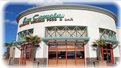

La Casuela Mexican Restaurant & Bar
About Us |
Welcome to La Casuela Mexican Restaurant & Bar, Home of the Micheladas. Simply the best Mexican Food in the Valley. Located in the heart of Ripon, La Casuela Mexican Restaurant & Bar offers great and affortable Mexican cuisine in a charming atmosphere with friendly service.
Enjoy dining in our casual enviroment dining area or modest and cozy bar, or reserve out our Banquet room, Multimedia room (outfitted with a 50" Flatscreen TV, DVD, andLaptop connection) for special occasions.
Background
"LAS CasuelaS MEXICAN RESTAURANT AND BAR"
(THE ORIGINAL)
The Ramirez Family has been in business for over 25 years. Ana and Guillermo Ramirez developed “Las Casuelas Mexican Restaurant and Bar”, family owned and operated.
There are currently three “Las Casuelas Mexican Restaurant and Bar” locations, each ran by one of Ana’s and Guillermo’s three sybilings, in the towns of Manteca, Modesto, and Turlock.
“La Casuela Mexican Restaurant & Bar” was created under the supervision and support of the Ramirez family although is not ran and operated by the Ramirez Family, it shares the same menu, recipes and family atmosphere that you would expect from “Las Casuelas”.
Visit Las Casuelas Mexican Restaurant and Bar oficial website
OR Las Casuelas Facebook page
FACEBOOK
LOCATIONS
MANTECA LOCATION
1580 W. Yosemite Blvd
Manteca, CA 95337
Phone: 209-825-0434
Fax: 209-825-1983
MODESTO LOCATION
4120 Dale Road
Modesto, CA 95356
Phone: 209-545-9455
Fax: 209-545-9427

TURLOCK LOCATION
3203 Entertainment Way
Turlock, CA 95382
Phone: 209-634-0080
Fax: 209-634-0077
LA CASUELA RIPON
107 E. Main Street
Ripon, CA 95366
Phone: 209-599-4003
Fax: 209-599-4001

La Casuela is proud of been a small replica of the Original
“Las Casuelas Mexican Restaurant and Bar”.
Thank you Ramirez Family for making it happen!
- Alex